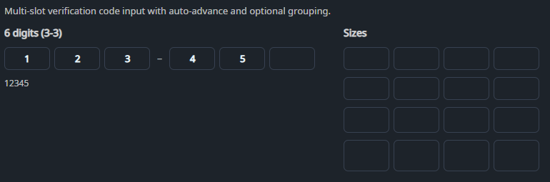

DaisyOtpInput is an OTP / verification code input composed of multiple single-character slots. It features animated focus states, auto-advance, backspace support, and digit-only filtering. It is designed for high-fidelity "Verify Code" screens with support for grouping (separators) and varying sizes.
| Property | Description |
|---|---|
Length (int) |
Number of OTP slots (default 6). |
Value (string?) |
Current OTP value (concatenated from the filled slots). |
AcceptsOnlyDigits (bool) |
When true, non-digit characters are filtered out (default true). |
AutoAdvance (bool) |
Automatically moves focus to the next slot after entering a character (default true). |
AutoSelectOnFocus (bool) |
Selects slot content when focused (default true). |
SeparatorInterval (int) |
Inserts a separator every N slots (0 disables separators). |
SeparatorText (string) |
Separator text (default –). |
Size (DaisySize) |
Size preset for the slots. |
| Event | Description |
|---|---|
Completed |
Raised when Value.Length == Length. |
<!-- Standard 6-digit OTP with separator -->
<controls:DaisyOtpInput Length="6"
SeparatorInterval="3"
Value="{Binding Code, Mode=TwoWay}" />
<!-- Alphanumeric code -->
<controls:DaisyOtpInput Length="8"
AcceptsOnlyDigits="False"
Value="{Binding Code, Mode=TwoWay}" />
<!-- Compact -->
<controls:DaisyOtpInput Length="4" Size="Small" />Completed can fire more than once if the value is re-set while still complete; treat it as “input is complete now” rather than a one-shot.otp-slot and otp-separator classes in your app styles.